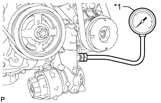

LUBRICATION SYSTEM > ON-VEHICLE INSPECTION |
| 1. CHECK OIL QUALITY |
Check the oil for deterioration, water contamination, discoloration or thinning.
If the quality is visibly poor, replace the oil and oil filter element (Click here).
| 2. CHECK ENGINE OIL LEVEL |
Warm up the engine. Then stop the engine and wait for 5 minutes.
Check that the engine oil level is between the low level and full level marks on the dipstick.
If low, check for leakage and add oil up to the full level mark.
| 3. INSPECT OIL PRESSURE |
Remove the oil pressure switch (Click here).
|  |
Install an oil pressure gauge.
| *1 | Oil Pressure Gauge |
Warm up the engine.
Inspect the oil pressure.
| Condition | Specified Condition |
| Idling | 70 kPa (0.7 kgf/cm2, 10.1 psi) or higher |
| 2500 rpm | 220 kPa (2.2 kgf/cm2, 32 psi) or higher |
Remove the oil pressure gauge.
Install the oil pressure switch (Click here).